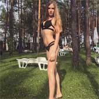

<section class="feedback">
  <div class="container">
    <h2 class="title">отзывы клиентов</h2>
    <div class="feedback__wrapper">
    </div>
    <div class="feedback__client">
      
      <div class="client-review">
        <div class="client-review__name">Сергей</div>
        <div class="client-review__achievement">1 полумарафон</div>
        <div class="client-review__text">
          <p>Бег может как дать здоровье, так и забрать его. Поэтому очень важно вооружиться правильным гаджетом для работы над собой (естественно, не забывая о технике бега).
            Сначала бегал хаотично и без пульсометра, затем, приуныв, решил попробовать. И вот мы с ним - лучшие друзья! А ещё мне помогли с техникой бега и познакомили с отличными тренерами.
          </p>

            С ними подготовился к своему первому полумарафону!
          </div>
        </div>
      </div>
      <div class="feedback__client">
        
        <div class="client-review">
          <div class="client-review__name">Алла</div>
          <div class="client-review__achievement">2 полумарафона</div>
          <div class="client-review__text">
            <p>Люди привыкли считать, что любой спорт - это пара кроссовок и усилие над собой. Но это не так.</p>

            <p>Для этого ещё нужны единомышленники, инвентарь и, конечно же, датчик считывающий не слишком ли запределен ваш пульс. С последним помогли ребята из FitSmart. Подобрали очень интересный вариант со скидкой!</p>

            Спасибо!!!
          </div>
        </div>
      </div>
      <div class="feedback__client">
        
        <div class="client-review">
          <div class="client-review__name">Виктория</div>
          <div class="client-review__achievement">2 полумарафона</div>
          <div class="client-review__text">
           <p> Если ты думаешь, что бегать – это очень скучно, или ищешь мотивацию начать заниматься спортом, советуем тебе попробовать GPS-арт.
             Это такой своеобразный вид искусства когда бегуны "рисуют" траекторию с помощью GPS-навигатора вооружившись умными часами. Ребята из FitSmart помогли подобрать гаджет и для этих целей!</p>

            Любой гаджет для твоих спортивных целей!
          </div>
        </div>
    </div>
  </div>
</section>